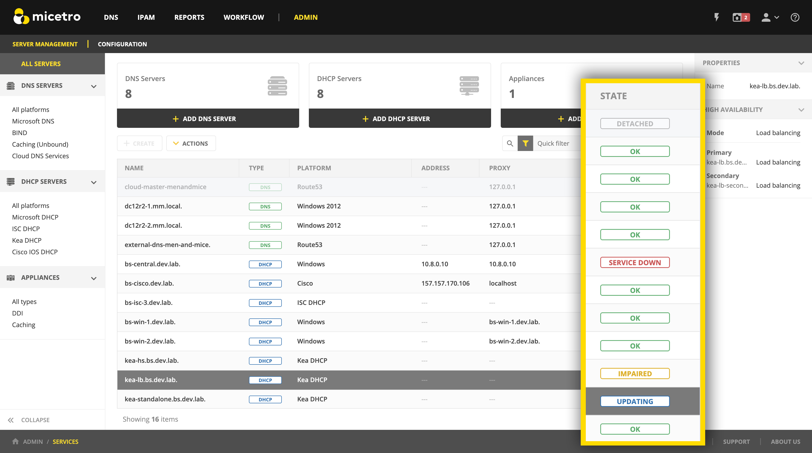

Server states
On the page Micetro displays an indicator of the state of the individual servers configured in the system.
{kind=link}
The indicators can refer to either the Server Controller (see Server controllers) running on the DNS/DHCP server, or the DNS/DHCP server service itself.
Use the following table for more information on the indicators:
Indicator |
Component |
Explanation |
|---|---|---|
Unknown |
Controller |
The status of the DNS/DHCP Server Controller is unknown. |
OK |
Server, Controller |
The DNS/DHCP Server Controller and service are both OK. |
Unreachable |
Controller |
The DNS/DHCP Server Controller is offline or otherwise unreachable. |
Out of date |
Controller |
The DNS/DHCP Server Controller has a different version than Central. |
Updating |
Controller |
The DNS/DHCP Server Controller is being updated. |
Uninitialized |
Server |
The DNS/DHCP server is uninitialized and needs to be manually initialized. |
Detached |
Server |
The DNS/DHCP server has been detached without removing it from Micetro. |
Service Down |
Server |
The DNS/DHCP server is down and not responding to queries. |
Service Impaired |
Server |
The DNS/DHCP server is running but impaired. [1] |